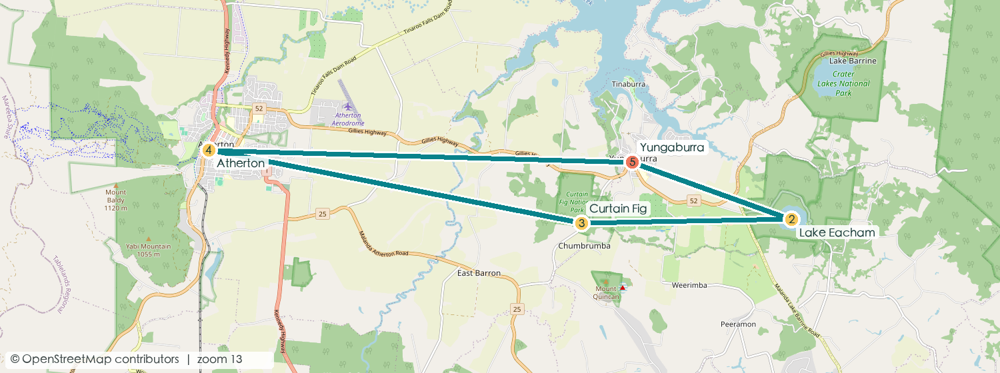
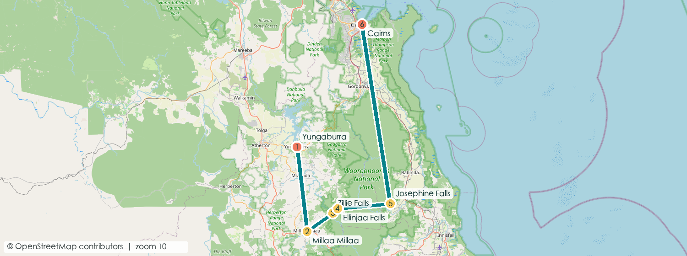
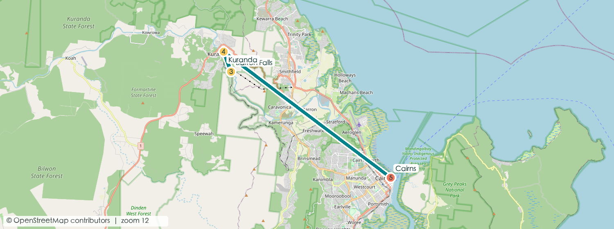
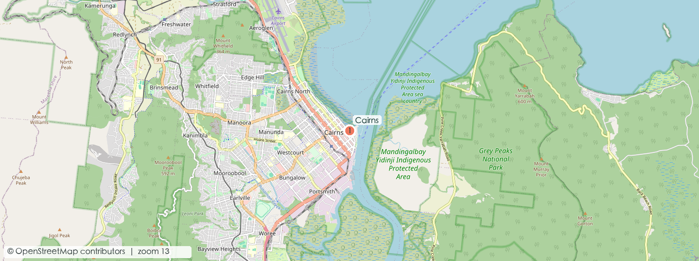

10天 9晚建议版本
2人情侣慢游
A$6,700±双人参考总支出
约 650 km自驾主线
一眼看懂路线
Cairns Airport→Port Douglas ×2→Cape Tribulation ×1→Yungaburra ×2→Cairns ×4→Brisbane
更省钱的收尾：若 9/25 有合适的晚班机，取消最后一晚 Cairns，白天只排轻松市区活动，预计省 A$180–300；潜水后须遵守运营商给出的禁飞间隔。
⚠ 2026-09 核查警示（直接影响本行程）：Skyrail 缆车主线因 8500 万澳元升级工程
8/19–10/25 停运，「火车上、缆车下」经典组合在本行程日期内走不通——Day 7 已改为观光火车往返 + Kuranda–Barron Falls 缆车环线（周三至周日运营，9/23 恰好可乘）。订票前查
Skyrail 官方公告。全部核查结论见下方「八区画像速查」。
每日行动卡

约 A$170DAY 1 · 9/17
机场 → 海岸公路 → Port Douglas
- 午后 取车，沿 Captain Cook Highway 北上；Rex Lookout 看海岸弧线。
- 傍晚 Four Mile Beach 散步、看日落色温。
- 晚餐 Salsa Bar：热带食材、海鲜和轻松度假氛围；想省钱可选 The Court House Hotel。
车程约 1小时轻松适应日

约 A$650–780DAY 2 · 9/18
Outer Reef 全天船
- 报到 平台型选 Quicksilver（A$338/人 + 燃油费 A$10，礁上 3.5 小时，最稳不晕船）；认真浮潜选 Wavelength（A$318/人含 EMC，限 58 人、3 个专属礁点、海洋生物学家导潜，TripAdvisor 4.9）；潜浮兼营选 Silversonic（A$328 + 燃油费）。
- 白天 浮潜、半潜艇/玻璃底船；9 月信风仍强，提前 30 分钟服晕船药。
- 晚餐 Zinc（OpenTable 可订）或 Wrasse & Roe（本地可持续海鲜，Google 4.5，旺季常满先订）。
最优先预订看清燃油费/EMC 口径

约 A$270DAY 3 · 9/19
Mossman Gorge → Daintree → Cape Tribulation
- 上午 Mossman Gorge：车停 Cultural Centre（免费），进峡谷必须坐 shuttle（往返 A$15.50/人，末班 16:30 出谷）；官方不建议在河里游泳。
- 午后 Daintree River 鳄鱼生态船（Solar Whisper 太阳能电动船 A$30/小时，看不到免费再坐）；渡轮 2026 新价小车往返 A$57，提前 24 小时网购 QR 电子票。
- 途中吃 Daintree Ice Cream Co（每天 9:00–17:00）；在 Mossman 加满油——河北只有 Diwan 一个加油点。
避免黄昏赶路离线地图+现金少量

约 A$220DAY 4 · 9/20
雨林木栈道 → Atherton Tablelands
- 清晨 Dubuji Boardwalk，观察扇棕与红树林过渡带。
- 午后 原路渡河后转入高原；抵达 Yungaburra 休息。
- 晚餐 Lake Barrine 茶室或村内餐馆；期待司康、当地奶制品和乡村份量。
长驾驶日约 4小时净车程

约 A$190DAY 5 · 9/21
火山湖、瀑布与鸭嘴兽
- 上午 Lake Eacham 环湖步道，天气好可游泳。
- 午后 Millaa Millaa Falls；回程看 Curtain Fig Tree。
- 黄昏 Peterson Creek 安静等鸭嘴兽，少说话、不用闪光灯。
免费景点多性价比最高日

约 A$240DAY 6 · 9/22
高原咖啡 → Cairns
- 上午 Lake Barrine 游船或湖边早餐，之后品尝高原咖啡。
- 午后 下山回 Cairns、还车或办理市区酒店入住。
- 晚餐 Prawn Star：船上吃虾、泥蟹与生蚝，体验直接但座位有限。
入住后步行海鲜夜

约 A$420–500DAY 7 · 9/23
Kuranda：火车往返 + Barron Falls 缆车环线
- 上午 Scenic Railway 8:45 班上山（Heritage 往返 A$87/人，Gold Class 15:30 下山班 A$201 往返）；Barron Falls 站台停靠观瀑。
- 午后 村内逛 Heritage/Original Markets（15:00–15:30 收摊，先逛后吃）；⚠ Skyrail 主线停运至 10/25，改乘 Kuranda–Barron Falls Loop 环线（约 1 小时，含 The Edge 悬空观景台 + ranger 导览，周三–周日开，9/23 可乘），再搭 14:45/15:30 火车下山。
- 晚餐 回 Cairns 后去 Ochre：尝鳄鱼、袋鼠或本土香料料理（周日休）。
火车票提前订全村 15:30 前收摊

约 A$260–420DAY 8 · 9/24
慢享日：按摩、咖啡与好餐厅
- 上午 Esplanade Lagoon 与海滨步道；咖啡首选 Caffiend（Google 4.6，7:00–15:00），小巷里的 Blackbird 备选。
- 下午 预约 60–90 分钟按摩或酒店 Spa，把连续公路日的疲劳释放掉。
- 晚餐 Tamarind 做精致泰式，适合安排一次正式约会晚餐。
恢复体力Spa需预约

约 A$80–600DAY 9 · 9/25
唯一弹性日：按天气补位
- 晴天 Green Island、Fitzroy Island 或热气球三选一。
- 普通天气 Cairns Aquarium、植物园、夜市与咖啡巡游。
- 晚班机版 下午回酒店取行李，预留 2小时到机场。
只留一天机动可省一晚

约 A$180–350DAY 10 · 9/26
Cairns → Brisbane
- 上午 若保留住宿：从容早餐、最后采购。
- 起飞前 国内线建议提前约 2小时到机场；核对托运行李额度。
- 备选 若已乘 9/25 晚班机，本日住宿和早餐预算归零。
离境日航班价另计
住宿与预算总表
| 日期 | 入住地点 | 建议入住/退房 | 双人房预算 | 选择逻辑 |
|---|
| 9/17–9/19 | Port Douglas · 2晚 | 14:00 / 10:00 | A$220–320/晚 | 步行到 Macrossan St 或码头，减少晚餐后开车。 |
| 9/19–9/20 | Cape Tribulation · 1晚 | 14:00 / 10:00 | A$180–280/晚 | 选有餐厅或厨房的住处；雨林区夜间选择少。 |
| 9/20–9/22 | Yungaburra · 2晚 | 14:00 / 10:00 | A$170–260/晚 | 住村内便于黄昏步行找鸭嘴兽。 |
| 9/22–9/26 | Cairns · 4晚 | 14:00 / 10:00 | A$190–300/晚 | Esplanade/码头附近；9/25晚飞可减为3晚。 |
八区画像速查（2026-09-03 全面核查）
用公开数据（官网/政府机构/Queensland Parks/SLSQ/TripAdvisor）对凯恩斯周边八个片区做了逐条带来源和置信度的吃住玩画像，全文在
research/profiles。行程相关的硬结论：
| 片区 | 关键结论（2026-09 核实） |
|---|
| Cairns 市区 | Lagoon 免费全年可游（周三上午维护）；Aquarium 最晚 14:30 入场；Rusty's Markets 只开周五–周日；订位平台各家不同（Cairns 主流不是 TheFork）；Cairns ZOOM 穹顶动物园已永久停业。 |
| 北部海滩 | Palm Cove/Trinity 全年有巡逻；Holloways Beach 因海岸侵蚀整滩关闭；Ramada Palm Cove、Paradise Palms 高尔夫已不存在。 |
| Port Douglas | On the Inlet、The Little Larder、Betty's、Barbados、Lure 均已停业；St. Crispins Cafe（原 Choo Choo's）仍营业；Mossman 糖厂已关、甘蔗小火车场景成历史；旺季晚餐提前多日订。 |
| Daintree | 渡轮 2026-07 起小车往返 A$57（QR 电子票）；全区无市电、加油点仅 Diwan 一处；租车合同普遍禁走 Cape Trib 以北的 Bloomfield Track，违规保险不赔。 |
| Kuranda | Skyrail 主线 8/19–10/25 停运，仅 Kuranda–Barron Falls Loop（周三–日）；火车每日两班、全村 15:30 前收摊；旱季 Barron Falls 水量小，看的是峡谷不是大瀑布。 |
| Atherton 高原 | 鸭嘴兽在 Peterson Creek 黎明/黄昏最稳；Mareeba 咖啡庄园（Jaques/Skybury）周末不开；Nerada 茶室已无限期关闭；全区下午三四点打烊，晚餐集中在 Yungaburra。 |
| 大堡礁出海 | 20+ 家船司逐家比价：怕晕船选 Quicksilver 大船，认真浮潜选 Wavelength（4.9/4,417 条），预算选 Dreamtime（A$255 起）；Quicksilver 系另收燃油费 A$10、部分船家 levy A$20 单列，下单看总价口径。 |
| 南线（备选） | 本行程未排；若加一天：Paronella Park 门票 A$62 含夜游+一晚露营+两年重入；Babinda Boulders 只在上游指定泳区游（下游 Devil's Pool 百年 21 人溺亡）；Etty Bay 清晨/黄昏看野生食火鸡最稳。 |
必吃版与本地人吃法
值得专程的一顿Nautilus 辣炒泥蟹（人均 $120–200，周日休/1–2 月歇业）· Nu Nu degustation（约 $140–160）· Wrasse & Roe 可持续海鲜（Google 4.5）· Ochre 袋鼠/鳄鱼/鸸鹋拼盘（四道式约 $70）· Prawn Star 渔船上吃海鲜拼盘。全部要订位。
便宜但独一份Mocka's 鳄鱼叻沙派（全澳派赛亚军）· Rusty's 周末早市热带水果+法棍一餐 $8–15 · Ganbaranba 拉面（17:00 开门 17:30 坐满）· Daintree Ice Cream 自家果园奇果四球 $7.50–9.50 · 高原线：Mungalli 芝士蛋糕、Lake Barrine 百年茶屋 Devonshire tea。
本地人省钱法Yorkeys Boating Club 花 $5 办社交会员吃码头海鲜 bistro · Tin Shed 社区俱乐部一线水景最便宜 · Harrisons 一帽店午市 2 道+1 杯酒 $49（晚市 $100+）· First Table 早鸟半价 · BYO 店自带酒 · 周日/假日普遍 +10–15% 附加费。完整必吃清单
天气预判与安全预警（9/17–9/26）
天气底牌（BOM 多年统计，非逐日预报）：9 月下旬是凯恩斯全年最干爽的窗口——白天约 28°C / 夜约 19°C，整月平均仅约 5 个雨日，湿度全年最低，无气旋风险，水母季（11 月起）还没到，海水约 24.7°C。唯二变量：外海东南信风仍有 10–25 kn（出海挑窗口内风最小的一天，看 BOM 海况预报，SE ≤15 kn / 浪 ≤1 m 即舒适日）；高原早晚仅约 13°C，黄昏蹲鸭嘴兽和清晨热气球都要带保暖层。⚠ 9/19 起撞上昆州春假（9/21–10/5）——船票、火车、热气球、住宿都更满更贵，能早订就早订。
| 日程 | 可行性判断 | 历史事故预警（均为确证记录） |
|---|
| D2 · 外礁船 | 高，但看风挑日子；海况差就与 D9 弹性日对调 | 浮潜死亡的第一诱因是心脏事件（昆州 2000–2019 共 166 起浮潜相关死亡；2016/2023 年 Michaelmas Cay 均有 70+ 岁游客猝死）。60 岁以上或有心脏/血压病史：向船方申报、全程用浮具；提前 30–60 分钟服晕船药；医疗问卷不隐瞒。 |
| D3 · Mossman Gorge / Daintree | 高（全年最干月）；渡轮电子票提前 24h 买 | Gorge 自 2003 年至少 3 人溺亡（coroner 定性「固有危险水道」）——不下水；Daintree 河 2009 年鳄鱼致死案；鳄鱼案全部是人主动沾水——河口红树林水边 5 m 内不停留。 |
| D4 · Cape Trib | 高 | 2016 年 Thornton Beach 夜泳者被鳄鱼拖走——海滩只散步、全年不下水（无网无救生员）；cassowary 伤人案 8 起中 5 起的鸟曾被投喂——不投喂不逼近。 |
| D5 · 高原瀑布/火山湖 | 高（水清路干，瀑布为旱季「秀气版」） | 2024 年 Millaa Millaa 两名年轻男子溺亡（一人施救双双遇难）；此类水潭死者多为年轻力壮的男性。不进瀑布冲击区；雨后/水浑不下水；同伴遇险不徒手救——扔浮物、打 000。 |
| D6 · Gillies 下山 / D1 海岸公路 | 高；雨雾天 Gillies 改走 Kennedy Hwy | Captain Cook Hwy 2026-05 双亡事故、Gillies（19 km 263 弯）2025-09 摩托致死。按弯道限速牌（多为 25–35 km/h），不超车，黄昏后不开山路。 |
| D7 · Kuranda | 不受天气制约 | 全行程风险最低：火车 2010 年暴雨出轨仅 5 轻伤、Skyrail 运营 30 年零乘客伤亡。 |
| D8/D9 · Lagoon / 离岛 / 热气球 | 高；热气球 Mareeba 谷地起飞率全澳最稳之一 | Lagoon 2018 年 7 岁儿童溺亡——带娃下水家长专人盯；离岛 2018 年 Green Island 两起死亡（其一在旗帜区外 500 m）——只在红黄旗间下水；热气球伤害模式几乎全是硬着陆——练好着陆姿势、腰背有伤者放弃。 |
三件真正反复杀人的事（管住它们，其余项目的风险都低于往返机场那段高速）：① 带着心脏病史下海浮潜且不申报；② 在鳄鱼水域沾水——河口、红树林、无巡逻海滩，哪怕只到膝盖；③ 雨后进瀑布水潭（以及徒手下水救人）。
应急速记：一切紧急拨
000（中文先拨 131 450 转接）；潜水急救 DAN 1800 088 200；水母蜇伤大量浇醋 ≥30 秒（有网海滩设 VINEGAR 醋站）；鳄鱼目击报 QWildlife app / 1300 130 372；医院 Cairns Hospital（165 The Esplanade，24h 急诊）。完整档案见
天气与安全画像。
预订闭环
价格为 2026 年规划期的双人参考区间，不等于实时库存报价；实际以运营商、酒店和航空公司结算页为准。雨林道路、渡轮、海况与活动时间应在出发前再次核对。画像数据核查于 2026-09-03（全文与来源），页内标注价多数官网有效期至 2027-03-31。